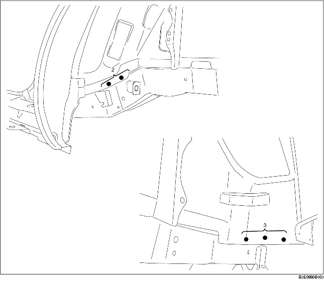

DEPOSE DU BAC DE PLANCHER ARRIERE
B3E098053750B01
1. Zone de découpe grossière (A).
-
Attention
-
• Au moment de la découpe grossière de la zone (A), découper à 20 mm {0,79 in} du rebord (vers l'arrière) à l'arrière de l'ancrage inférieur.
2. Déposer le bac de plancher arrière.
